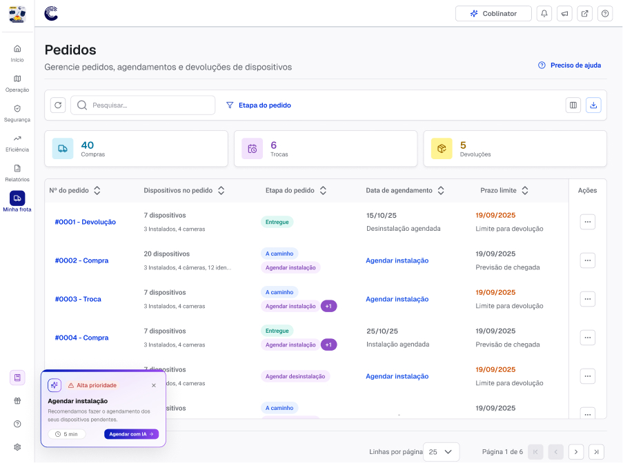

Visibilidade de Pedidos: destravando a instalação
Contexto
Esse projeto nasceu de um achado da pesquisa qualitativa do case Basic Value: instalação era o maior gargalo de ativação dos clientes, maior até do que o processo comercial ou o próprio CS. Atuei como PM e designer principal (PMX) no time de Account Experience, responsável pelo onboarding de novos clientes na mesma plataforma B2B de telemetria veicular (hardware + software para gestão de frotas).
O setup da plataforma depende de uma etapa física: a instalação de dispositivos de telemetria nos veículos ou maquinários da frota, sem a qual os dados não começam a ser lidos corretamente. Isso significa que o cliente precisa esperar o dispositivo chegar, agendar uma data de instalação, contar com a disponibilidade de um técnico na data solicitada e deixar o veículo parado, o que afeta a operação da frota, até a instalação ser concluída. Só depois disso o dashboard passa a ser populado com dados e insights.
Problema
Antes desse projeto, o cliente não tinha nenhuma visibilidade operacional sobre o próprio pedido. Para saber onde estavam os dispositivos, qual base ia recebê-los, quando chegariam para poder agendar a instalação, ou quais itens do pedido já tinham sido instalados, o caminho mais utilizado era abrindo um ticket com atendimento ou CS. Isso não era só um incômodo: sem essa visibilidade, o gestor da frota não conseguia planejar quando parar os veículos para a instalação, nem organizar a operação no dia combinado, nem acompanhar o que tinha ficado pendente para as próximas etapas do onboarding. Cada uma dessas perguntas gerava um contato reativo, sobrecarregando o time de suporte com informação que já existia internamente e nunca tinha sido traduzida para o cliente.
Processo
Levei essa dor para o time como uma iniciativa formal, junto com uma designer estagiária que estava no período inicial dela no time. Começamos mapeando, num board colaborativo, o fluxo ponta a ponta de onboarding e instalação e todos os pontos onde o cliente perdia visibilidade, desde o pedido do dispositivo até a instalação concluída.
O diagnóstico apontou quatro causas específicas para a falta de clareza:
- A data de agendamento marcada ficava escondida dentro do fluxo, enquanto a data de chegada dos dispositivos, menos relevante pro cliente naquele momento, tinha mais destaque na tela.
- Cada etapa do processo (envio, instalação, devolução) vivia em um ticket interno separado, sem conexão visível entre elas.
- O painel do cliente não tinha um processo com início, meio e fim, e cada etapa aparecia quebrada em abas diferentes.
- Na base de tudo isso, o cliente continuava dependente do CSM para traduzir esses tickets internos em informação que fizesse sentido pra ele.
Trabalhar com o Hubspot e com processos operacionais fora da esfera de produto foi um desafio à parte. Encontramos gaps que não dava para resolver só no front, porque vinham de operações maiores que o time não controlava, e os dados de envio, instalação e devolução viviam em pipelines diferentes, sem nenhum ponto único que os conectasse. Para lidar com isso, especificamos uma nova API que concentrasse essas informações antes de traduzi-las para o cliente, e enxugamos boa parte dessas etapas internas sem comprometer a visibilidade que o cliente via do outro lado.
Solução
A entrega central foi uma nova página de pedidos, reunindo em um só lugar as compras, trocas e devoluções de dispositivos, hoje espalhadas em tickets internos separados, junto com um resumo rápido de quantos pedidos estão em cada situação e uma recomendação de agendamento sempre que houver instalação pendente.

A partir dessa visão geral, cada pedido abre em uma linha do tempo detalhada de status, traduzindo os status internos da operação para uma nomenclatura simples que o cliente consegue seguir sozinho: pedido realizado, envio dos dispositivos, instalação. Cada etapa mostra endereço, previsão de chegada e datas de agendamento propostas, sem que o cliente precise abrir um ticket para descobrir isso.

Ao lado da timeline, desenhamos uma visão de detalhe por dispositivo, que resolve o caso mais comum de dúvida do CS: pedidos com múltiplos dispositivos e datas de instalação diferentes, em que o cliente só queria saber quais já tinham sido instalados.

Como parte do mesmo esforço, o time também entregou um atalho de agendamento direto pela página de pedidos, conectado a um agente de agendamento por IA, entrega que vou detalhar num case à parte.
Resultado
Antes do lançamento, estabelecemos a meta de 20% de adoção da nova página de pedidos nos primeiros três meses. Lançamos para parte da base em fevereiro e liberamos para 100% dos clientes em março. A partir daí a adoção saltou de 0% para um pico de 35% em maio, se estabilizando em 32% em junho, superando a meta com folga. Junto disso, 40% dos agendamentos passaram a ser feitos diretamente pelo painel, sem passar por atendimento. Isso desonerou o time de CS de um volume relevante de contatos reativos que existiam só porque a informação já existia internamente e nunca tinha sido traduzida para o cliente.
O aprendizado mais claro deste projeto foi que boa parte da carga de atendimento não vem de problemas reais no produto, mas de informações que já existem internamente e nunca foram traduzidas para o usuário. Tornar essas informações visíveis para o cliente é o que de fato reduz o atrito e a dependência de suporte.